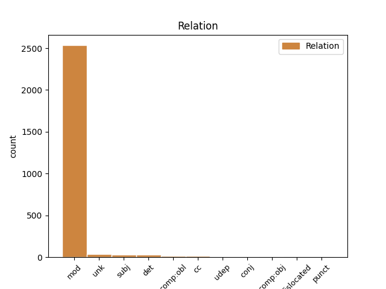
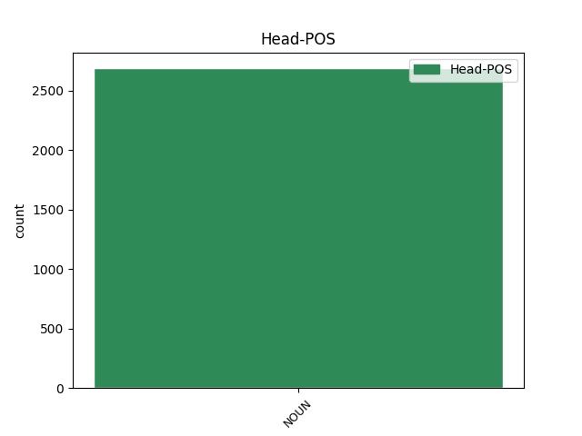
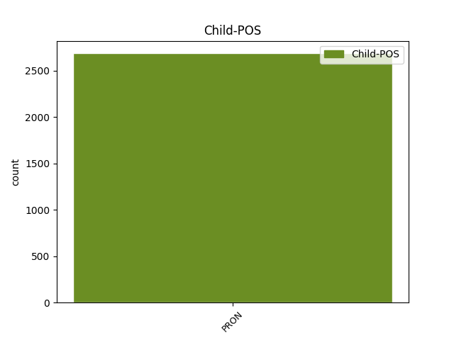

Distribution of features within this leaf



Agreement Rules sorted by frequency.
- When the dependent token is the compound(compound) of the head token, and the head token is PROPN
1 वे _ _ _ _ 0 _ _ _
2 नयी नया PROPN NNPC Case=Acc|Gender=Fem|Number=Sing 3 compound _ ChunkId=NP2|ChunkType=child|Translit=nayī
3 दिल्ली दिल्ली PROPN NNP Case=Acc|Gender=Fem|Number=Sing|Person=3 0 _ _ _
4 में _ _ _ _ 0 _ _ _
5 ' _ _ _ _ 0 _ _ _
6 चीनी _ _ _ _ 0 _ _ _
7 सांस्कृतिक _ _ _ _ 0 _ _ _
8 माह _ _ _ _ 0 _ _ _
9 ' _ _ _ _ 0 _ _ _
10 का _ _ _ _ 0 _ _ _
11 भी _ _ _ _ 0 _ _ _
12 उद्घाटन _ _ _ _ 0 _ _ _
13 करेंगे _ _ _ _ 0 _ _ _
14 । _ _ _ _ 0 _ _ _
1 उन्होंने _ _ _ _ 0 _ _ _
2 इसे _ _ _ _ 0 _ _ _
3 चीनियों _ _ _ _ 0 _ _ _
4 का _ _ _ _ 0 _ _ _
5 हृदय हृदय NOUN NNC Case=Nom|Gender=Masc|Number=Sing|Person=3 6 compound _ ChunkId=NP4|ChunkType=child|Tam=0|Translit=hr̥daya|Vib=0
6 परिवर्तन परिवर्तन NOUN NN Case=Nom|Gender=Masc|Number=Sing|Person=3 0 _ _ _
7 करार _ _ _ _ 0 _ _ _
8 दिया _ _ _ _ 0 _ _ _
9 । _ _ _ _ 0 _ _ _
1 यात्रियों _ _ _ _ 0 _ _ _
2 को _ _ _ _ 0 _ _ _
3 एक _ _ _ _ 0 _ _ _
4 जगह _ _ _ _ 0 _ _ _
5 एकत्रित _ _ _ _ 0 _ _ _
6 कर _ _ _ _ 0 _ _ _
7 उनके _ _ _ _ 0 _ _ _
8 वहन वहन NOUN NN Case=Nom|Gender=Masc|Number=Sing|Person=3 9 compound _ ChunkId=NP4|ChunkType=head|Tam=0|Translit=vahana|Vib=0
9 करने कर VERB VM Case=Nom|VerbForm=Inf 0 _ _ _
10 योग्य _ _ _ _ 0 _ _ _
11 किराये _ _ _ _ 0 _ _ _
12 पर _ _ _ _ 0 _ _ _
13 ऐतिहासिक _ _ _ _ 0 _ _ _
14 महत्व _ _ _ _ 0 _ _ _
15 व _ _ _ _ 0 _ _ _
16 धार्मिक _ _ _ _ 0 _ _ _
17 स्थानों _ _ _ _ 0 _ _ _
18 की _ _ _ _ 0 _ _ _
19 सैर _ _ _ _ 0 _ _ _
20 कराई _ _ _ _ 0 _ _ _
21 जाएगी _ _ _ _ 0 _ _ _
22 । _ _ _ _ 0 _ _ _
1 अनुराग _ _ _ _ 0 _ _ _
2 भठेजा _ _ _ _ 0 _ _ _
3 ने _ _ _ _ 0 _ _ _
4 बताया _ _ _ _ 0 _ _ _
5 कि _ _ _ _ 0 _ _ _
6 याहू _ _ _ _ 0 _ _ _
7 और _ _ _ _ 0 _ _ _
8 अन्य _ _ _ _ 0 _ _ _
9 कंपनियों _ _ _ _ 0 _ _ _
10 ने _ _ _ _ 0 _ _ _
11 नए नया ADJ JJ Case=Acc|Gender=Masc|Number=Sing 0 _ _ _
12 - _ _ _ _ 0 _ _ _
13 नए नया ADJ RDP Case=Acc|Echo=Rdp|Gender=Masc|Number=Sing 11 compound _ AltTag=adj-ADJ|ChunkId=NP4|ChunkType=child|Translit=nae
14 वर्जन _ _ _ _ 0 _ _ _
15 के _ _ _ _ 0 _ _ _
16 मैसेंजर _ _ _ _ 0 _ _ _
17 उपलब्ध _ _ _ _ 0 _ _ _
18 करवाए _ _ _ _ 0 _ _ _
19 हैं _ _ _ _ 0 _ _ _
20 । _ _ _ _ 0 _ _ _
1 यह _ _ _ _ 0 _ _ _
2 कमेटी _ _ _ _ 0 _ _ _
3 अपने अपना PRON PRP Case=Acc|Gender=Masc|PronType=Prs 0 _ _ _
4 - _ _ _ _ 0 _ _ _
5 अपने अपना PRON RDP Case=Acc|Echo=Rdp|Gender=Masc|PronType=Prs 3 compound _ AltTag=pn-PRON|ChunkId=NP2|ChunkType=child|Tam=0|Translit=apane|Vib=0
6 देशों _ _ _ _ 0 _ _ _
7 की _ _ _ _ 0 _ _ _
8 सरकारों _ _ _ _ 0 _ _ _
9 को _ _ _ _ 0 _ _ _
10 सड़क _ _ _ _ 0 _ _ _
11 मार्ग _ _ _ _ 0 _ _ _
12 खोलने _ _ _ _ 0 _ _ _
13 के _ _ _ _ 0 _ _ _
14 लिए _ _ _ _ 0 _ _ _
15 मनाएगी _ _ _ _ 0 _ _ _
16 । _ _ _ _ 0 _ _ _
Disagree Examples:
1 इसे _ _ _ _ 0 _ _ _
2 नवाब नवाब NOUN NNC Case=Nom|Gender=Masc|Number=Sing|Person=3 3 compound _ ChunkId=NP2|ChunkType=child|Tam=0|Translit=navāba|Vib=0
3 शाहजेहन शाहजेहन PROPN NNP Case=Acc|Gender=Masc|Number=Sing|Person=3 0 _ _ _
4 ने _ _ _ _ 0 _ _ _
5 बनवाया _ _ _ _ 0 _ _ _
6 था _ _ _ _ 0 _ _ _
7 । _ _ _ _ 0 _ _ _
1 जिसमें _ _ _ _ 0 _ _ _
2 चार _ _ _ _ 0 _ _ _
3 मेहराबें _ _ _ _ 0 _ _ _
4 हैं _ _ _ _ 0 _ _ _
5 और _ _ _ _ 0 _ _ _
6 मुख्य _ _ _ _ 0 _ _ _
7 प्रार्थना प्रार्थना NOUN NNC Case=Nom|Gender=Fem|Number=Sing|Person=3 8 compound _ ChunkId=NP3|ChunkType=child|Tam=0|Translit=prārthanā|Vib=0
8 हॉल हॉल NOUN NN Case=Acc|Gender=Masc|Number=Sing|Person=3 0 _ _ _
9 में _ _ _ _ 0 _ _ _
10 जाने _ _ _ _ 0 _ _ _
11 के _ _ _ _ 0 _ _ _
12 लिए _ _ _ _ 0 _ _ _
13 9 _ _ _ _ 0 _ _ _
14 प्रवेश _ _ _ _ 0 _ _ _
15 द्वार _ _ _ _ 0 _ _ _
16 हैं _ _ _ _ 0 _ _ _
17 । _ _ _ _ 0 _ _ _
1 शौकत शौकत PROPN NNPC Case=Nom|Gender=Masc|Number=Sing|Person=3 2 compound _ ChunkId=NP|ChunkType=child|Tam=0|Translit=śaukata|Vib=0
2 महल महल PROPN NNP Case=Acc|Gender=Masc|Number=Sing|Person=3 0 _ _ _
3 के _ _ _ _ 0 _ _ _
4 सामने _ _ _ _ 0 _ _ _
5 बड़ी _ _ _ _ 0 _ _ _
6 झील _ _ _ _ 0 _ _ _
7 के _ _ _ _ 0 _ _ _
8 किनारे _ _ _ _ 0 _ _ _
9 स्थित _ _ _ _ 0 _ _ _
10 वास्तुकला _ _ _ _ 0 _ _ _
11 का _ _ _ _ 0 _ _ _
12 यह _ _ _ _ 0 _ _ _
13 खूबसूरत _ _ _ _ 0 _ _ _
14 नमूना _ _ _ _ 0 _ _ _
15 कुदसिया _ _ _ _ 0 _ _ _
16 बेगम _ _ _ _ 0 _ _ _
17 के _ _ _ _ 0 _ _ _
18 काल _ _ _ _ 0 _ _ _
19 का _ _ _ _ 0 _ _ _
20 है _ _ _ _ 0 _ _ _
21 जिन्हें _ _ _ _ 0 _ _ _
22 गोहर _ _ _ _ 0 _ _ _
23 बेगम _ _ _ _ 0 _ _ _
24 भी _ _ _ _ 0 _ _ _
25 कहा _ _ _ _ 0 _ _ _
26 जाता _ _ _ _ 0 _ _ _
27 था _ _ _ _ 0 _ _ _
28 । _ _ _ _ 0 _ _ _
1 शौकत _ _ _ _ 0 _ _ _
2 महल _ _ _ _ 0 _ _ _
3 के _ _ _ _ 0 _ _ _
4 सामने _ _ _ _ 0 _ _ _
5 बड़ी _ _ _ _ 0 _ _ _
6 झील _ _ _ _ 0 _ _ _
7 के _ _ _ _ 0 _ _ _
8 किनारे _ _ _ _ 0 _ _ _
9 स्थित _ _ _ _ 0 _ _ _
10 वास्तुकला _ _ _ _ 0 _ _ _
11 का _ _ _ _ 0 _ _ _
12 यह _ _ _ _ 0 _ _ _
13 खूबसूरत _ _ _ _ 0 _ _ _
14 नमूना _ _ _ _ 0 _ _ _
15 कुदसिया कुदसिया PROPN NNPC Case=Nom|Gender=Fem|Number=Sing|Person=3 16 compound _ ChunkId=NP6|ChunkType=child|Tam=0|Translit=kudasiyā|Vib=0
16 बेगम बेगम PROPN NNP Case=Acc|Gender=Fem|Number=Sing|Person=3 0 _ _ _
17 के _ _ _ _ 0 _ _ _
18 काल _ _ _ _ 0 _ _ _
19 का _ _ _ _ 0 _ _ _
20 है _ _ _ _ 0 _ _ _
21 जिन्हें _ _ _ _ 0 _ _ _
22 गोहर _ _ _ _ 0 _ _ _
23 बेगम _ _ _ _ 0 _ _ _
24 भी _ _ _ _ 0 _ _ _
25 कहा _ _ _ _ 0 _ _ _
26 जाता _ _ _ _ 0 _ _ _
27 था _ _ _ _ 0 _ _ _
28 । _ _ _ _ 0 _ _ _
1 मुख्य _ _ _ _ 0 _ _ _
2 रूप _ _ _ _ 0 _ _ _
3 से _ _ _ _ 0 _ _ _
4 यह _ _ _ _ 0 _ _ _
5 प्रदर्शन प्रदर्शन NOUN NNC Case=Nom|Gender=Masc|Number=Sing|Person=3 6 compound _ ChunkId=NP3|ChunkType=child|Tam=0|Translit=pradarśana|Vib=0
6 कला कला NOUN NN Case=Acc|Gender=Fem|Number=Sing|Person=3 0 _ _ _
7 और _ _ _ _ 0 _ _ _
8 दृश्य _ _ _ _ 0 _ _ _
9 कला _ _ _ _ 0 _ _ _
10 का _ _ _ _ 0 _ _ _
11 केंद्र _ _ _ _ 0 _ _ _
12 है _ _ _ _ 0 _ _ _
13 । _ _ _ _ 0 _ _ _